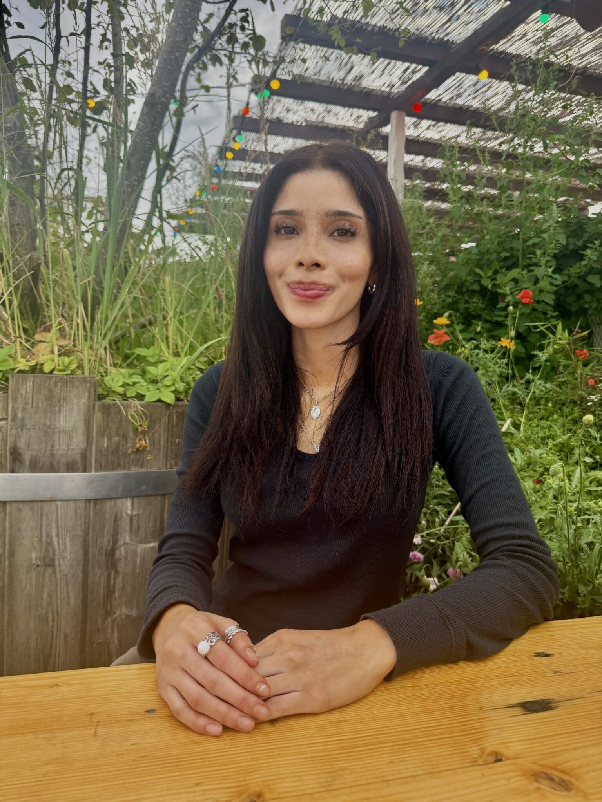
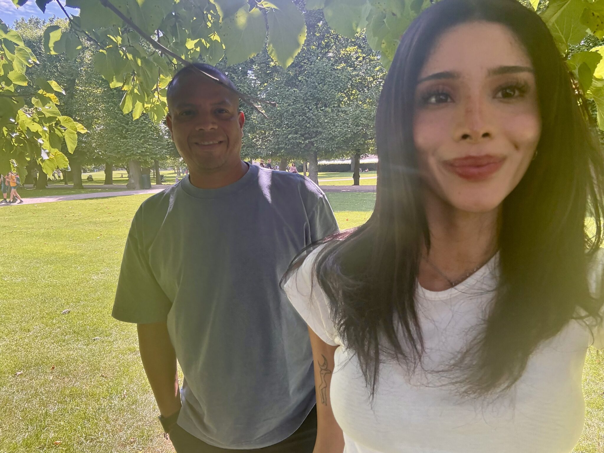
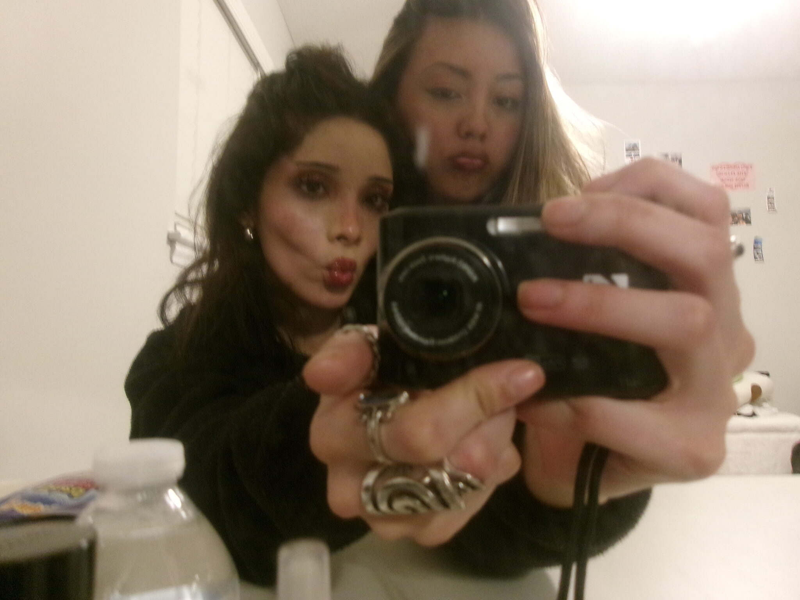

My name is Valerie Arango, and I’m a student at the University of North Carolina at Chapel Hill. I’m originally from Charlotte, North Carolina, and I’m currently double majoring in Psychology and Advertising & Public Relations. After undergrad, I plan on going to grad school for fashion merchandising, with the goal of eventually working in Fashion PR.
I’ve always been drawn to fashion—honestly, it’s been a part of me for as long as I can remember. I always joke that “the Met Gala is my Olympics,” but it really says a lot about how much I love the creativity and storytelling behind fashion. When I was younger, I used to sketch designs, read fashion magazines, and watch documentaries whenever I could. To me, fashion has never just been about clothes—it’s about identity, culture, and the way people choose to present themselves to the world.
At the same time, I’ve always had a strong interest in psychology. I’ve always been curious about how people think, why they act the way they do, and what influences their decisions. I originally planned to just major in psychology with a minor in marketing, but over time, I realized that something was missing. I kept asking myself if I could really see myself doing that long-term, and deep down, I knew I wanted something more creative.
That’s when I decided to add Advertising and PR as a second major. It ended up making a lot of sense to me, because understanding psychology is such a big part of connecting with people and communicating effectively. Recently, I’ve found myself more drawn to PR than advertising, especially because of the storytelling and relationship-building aspect of it. It feels a lot more aligned with what I actually enjoy.
I think one of the hardest parts about being in college is figuring out what’s right for you. It’s not always a straight path, and it definitely hasn’t been for me. But through that process, I’ve learned a lot about myself and what I want, and I’m excited to keep building a career that combines creativity, strategy, and everything I’ve always been passionate about.